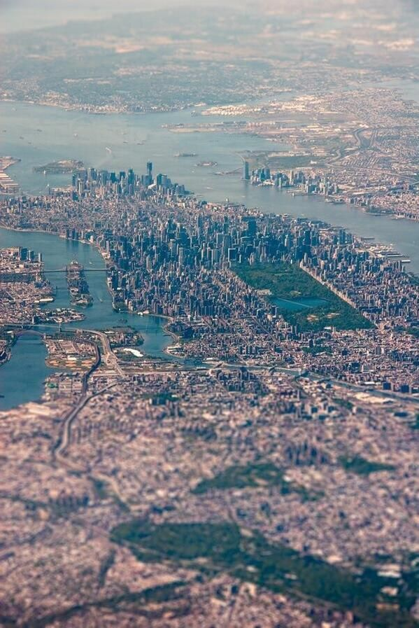

I would give the greatest sunset in the world for one sight of New York's skyline. Particularly when one can't see the details. Just the shapes. The shapes and the thought that made them. The sky over New York and the will of man made visible. What other religion do we need?
-Ayn Rand
